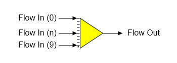

Receiver A receiver station is used to combine up to ten (10) input flow streams into one (1) output flow stream.

General Features The composition, temperature and pressure of the output flow stream is a direct result of the input flows; that is, the total flow out and flow fractions are sums of the contents of the input flows, the temperature is a result of the heat contents and the pressure is the minimum of the input flows. Liquid-vapor phase changes are considered in a receiver station (i.e., condensate to vapor, or vapor to condensate can occur), but not sucrose (i.e., sucrose crystals melting, or sucrose crystals growth does not occur). If the solubility equation coefficients for any of the input flows are different, the output flow solubility coefficients will be a weight-weighted average of the input flows. Also, a receiver station can be used to satisfy required and/or pressure feedback flows (see the discussion that follows).
A receiver station is used to provide a pressure value for a flash tank, compressor and/or thermocompressor station when vapor from these stations is fed to a receiver and the receiver has another input flow stream for which the pressure is known. For example, condensate flashing into a vapor line, or vapor from a compressor, or a thermocompressor station being added to exhaust steam for supply to an evaporator station.
The pressure transmitted back to the flash tank, compressor, thermocompressor, pan, etc by Sugars is the minimum pressure of all the other flows into the receiver with a pressure value > 0 that aren't from another station that needs a pressure value; that is, the pressure transmitted back is the output pressure from the receiver. Any external flows into the receiver must have a flow quantity > 0 for their pressure to be considered in the minimum pressure determination. The flow leaving the receiver will be a pressure feedback flow if all of the flows into the receiver are pressure feedback flows and the pressure of the flow leaving the receiver will be fed back to the receiver by the destination station; however, if the flow is not connected to another station but instead leaves the model, the pressure will be set to atmospheric pressure (see Program Overview > User Interface ).
The receiver will allow selection of one of its input flows to be a required flow if the output flow from the receiver is required. A small box will appear on the Receiver Properties window that shows all flows into the receiver that can be made required and a selection can be made as to which input flow will be used to satisfy the required output flow. Only flows into the receiver that can be made required will be display in this box, and the box will only appear if more than one input flow into the receiver can be made required. Sugars will set the quantity of the required flow into the receiver equal to the difference between the required flow out of the receiver less the quantity of all other flows into the receiver.